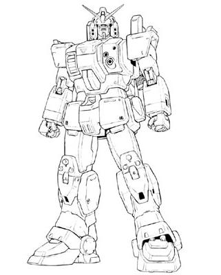

| RX-79G Gundam M.P. Ground Type High Performance Ground Combat Earth Federation Mobile Suit |
|
|  | |
General and Technical Data |
|
|
Model number: RX-79G Code name: Gundam M.P. Ground Type Unit type: limited production ground combat mobile suit Operator: Earth Federation Dimensions: head height 18.0 meters Weight: empty 53.8 metric tons; max gross 66.0 metric tons Construction: lunar titanium alloy Powerplant: Minovsky type ultracompact fusion reactor, output rated at 1350 kW Propulsion: rocket thrusters: 52000 kg total Performance: thruster acceleration 0.71 G, maximum ground running speed 84 km/h Equipment and design features: sensors, range 5900 meters; optional extended sensor pack, boosts range 300 meters Fixed armaments: 2 x beam saber, stored in recharge slots in leg racks, hand-carried in use; vulcan gun, mounted in chest; multilauncher, mounted in chest Optional fixed armaments: vulcan gun pod, mounted on right side of head Optional hand armaments: 100mm machinegun, clip-fed, 32 rounds per clip; 305mm bazooka, clip-fed, 7 rounds per clip; arm shield; 3x grenade Magnetic Storage Racks: 3, primary rack on backpack, one additional rack on either hip. |
|
| Technical and Historical Notes | |
|
When the RX-78 Gundam was completed, it was intended purely as an initial-run testbed unit. The preliminary data acquired from the Gundam was used in construction of a pair of pre-production mobile suits: The RGM-79E for space combat, and the RGM-79[G] for land combat. However, the initial run of GM Ground Types still left a significant amount of lunar titanium left over. Federal engineers who obviously had far too much time on their hands took the remaining RGM-79[G] frames, and along with Tem Ray's plans for the original RX-78 Gundam, built a handful of their own.
The Gundam Mass Production Ground Type (GMPGT for short) is something of a misnomer in its own. Only a limited number were produced, and it was technically a GM as far as the mobile suit's internals were concerned. However, it still nevertheless managed to take the coveted name "Gundam" and the RX model designation in its own right. The GMPGT sports many of the features of the GM Ground Type, including the new upper-torso cockpit location and lack of head-mounted vulcan guns. The latter was compensated for via the addition of a vulcan gun to the mobile suit's chest, and an optional gun pod that could be attached to the side of the Gundam's head. A "multilauncher" is also mounted in the chest in the same area as the vulcan. This unique weapon is used to fire grenades, decoy systems, and other ordinance. A specialized parachute pack is also armable, making the GMPGT excellent in paradrop operations. The GMPGT is a specialized mobile suit intended for both normal and unconventional combat. For extended operations, the GMPGT's backpack has been flattened and modified to house a large weapons container, allowing it to carry any matter of armament in significant quantities. Other nifty technologies include a periscope, normally intended to help the GMPGT see around corners, and an optional larger sensor package for long-range observation (it is intended to be used in conjunction with the gun pod to maintain balanced weight). Though, for once, the GMPGT actually has a reactor capable of powering a beam rifle, Federal engineers have yet to find a cost-effective method of mass producing one.
|
 RPG quick stats sheet
RPG quick stats sheet | Weapons and Features | |


Periscope |
|